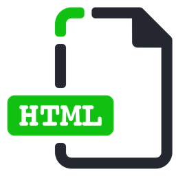

Tema 1: Etiquetas Básicas de HTML

Los documentos HTML se encuentran estrictamente organizados. Cada parte del
documento está diferenciada, declarada y determinada por etiquetas específicas, las más utilizadas son:
| Etiqueta |
Uso |
| html |
Concreta el contenedor principa. |
| head |
Determina el encabezado del documento. |
| title |
Concreta el título del documento. |
| body |
Detalla El cuerpo del documento. |
| article |
Especifica Contenido redistribuible. |
| section |
Define una sección. |
| h1 |
Fija Encabezado de nivel 1. |
| header |
Define el encabezado de una sección. |
| p |
Define un parrafo. |
| ol |
Lista ordenada. |
| ul |
Lista no ordenada. |
| img |
Define una imagen. |
| a |
Define un hipervinculo. |
Digital Cubik - Marketing Digital y Diseño Web. (2020, 26 septiembre). Etiquetas basicas de HTML
definición -
Digital Cubik. Digital Cubik - Diseño web - Marketing Digital.
https://digitalcubik.com/diccionario-marketing-digital/e/etiquetas-basicas-de-html/
Tema 2: Atributos y valores
Los atributos de HTML son palabras especiales utilizadas dentro de la etiqueta de apertura, para controlar
el comportamiento del elemento. Los atributos de HTML son un modificador de un tipo de elemento de HTML. Un
atributo tampoco modifica la funcionalidad por defecto de un tipo de elemento o proporciona funcionalidad a
ciertos tipos de elementos incapaces de funcionar correctamente sin ellos. En sintaxis HTML, un atributo se
añade a una etiqueta de inicio de HTML.
Atributos comunes:
La mayoría de elementos pueden tomar cualquiera de varios de los atributos comunes:
El atributo id (identidad) proporciona un identificador único en el ámbito de todo el
documento para un
elemento.789 Este puede ser utilizado como selector CSS para proporcionar propiedades presentationales,
por los navegadores para centrar la atención en el elemento concreto, o por scripts (guiones) para alterar
los contenidos o la presentación de un elemento. Anexado a la URL de la página, la URL directamente apunta
el elemento concreto dentro del documento, típicamente una sub-sección de la página. Por ejemplo, los #ID
"Atributtes" en http://en.wikipedia.org/wiki/html#Atributtes
El atributo class proporciona una manera de clasificar elementos similares.1011 Esto
puede ser utilizado
para propósitos semánticos, o para propósitos de presentación. Semantically, por ejemplo, las clases se
utilizan en microformatos. Presentacionalmente, por ejemplo, un documento HTML podría utilizar la
designaciónclass="notation" , para indicar que todos los elementos con esta clase de valor están
subordinados al texto principal del documento. Tales elementos podrían ser reunidos juntos y presentados
como notas al pie en una página, en vez de aparecer en el sitio donde se encuentran en la fuente de HTML.
Otro uso sería como selector CSS.
Un autor puede utilizar propiedades no presentacionales de código atribucional de style para un elemento
particular.El atributo de estilo se puede utilizar en cualquier elemento de HTML ( se validará en cualquier
elemento HTML; aun así, no es necesariamente útil). Se consiera mejor práctica usar los atributos iddo
class de un elemento para seleccionar el elemento con una stylesheet (hoja de estilo), aunque a veces esto
puede ser demasiado pesado para una aplicación de propiedades de estilo simple y específico o ad hoc.
El atributo de title (título) se suele usar para unir explicación subtextual a un elemento. En la mayoría de
los navegadores, este atributo se muestra como lo que a menudo se llama un tooltip o globo.
colaboradores de Wikipedia. (2021, 22 septiembre). Atributo HTML. Wikipedia, la enciclopedia libre.
https://es.wikipedia.org/wiki/Atributo_HTML